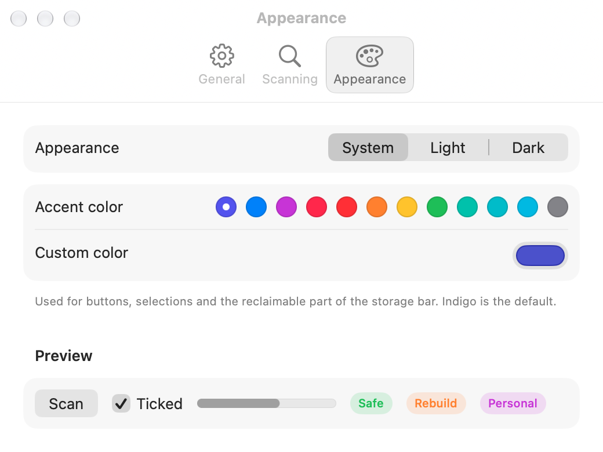

Using Reclaim
Scan, review what Reclaim suggests, tick what you want gone, and delete it in one click.
Scanning
Click Scan on the Overview, or press ⌘R. Reclaim reads every folder it is allowed to and shows a live count of files and bytes. A full Mac takes about a minute; you can click Stop at any time.
- By default it scans the whole disk. To scan only your home folder, change Scanning › Scan.
- Sizes are the space files really use on disk. A 32 GB disk image that holds 1 GB of data counts as 1 GB, and a file with several hard links counts once.
- Other disks, such as external drives, are never scanned.
- Without Full Disk Access, the scan skips Desktop, Documents, Downloads, iCloud Drive and other apps' data, and the Overview says so. Otherwise macOS would pause the scan to ask about each of those folders.
Overview

- Storage bar: used space, the part of it Reclaim suggests deleting (in your accent colour), and free space.
- Last scan: how much you could reclaim, how much of that is Safe, and how long the scan took.
- Top categories: each kind of suggestion with its size. Click one to open its list.
Suggestions
The sidebar has one entry per kind of suggestion, with its total size. See What it finds for every rule. Each list shows:
- a checkbox to tick the item for deletion;
- its name, and the folder it is in;
- its size, safety level and when anything inside it last changed.
Click a column header to sort. Type in the search field to filter by name or path. Select All Safe ticks every Safe item in the list, and Deselect All unticks the list. Right-click rows to tick or untick several at once, or to reveal one in Finder.
Select a row to see the inspector on the right: what the item is, why it is suggested, what happens after deleting it, and its full location. Toggle the inspector with the sidebar button in the toolbar.
⚠️ An orange warning next to an app's cache means that app is running. Quit it before deleting its files, or it may recreate them or misbehave.
Safety levels
| Level | Meaning | Ticked for you |
|---|---|---|
| Safe | Rebuilds itself; nothing for you to do. Build caches, app caches, logs, emulator quick-boot snapshots, the Trash. | Yes |
| Rebuild | Comes back only after a reinstall or download, such as npm install or composer install. | No |
| Personal | Your own data. Reclaim reports it so you can decide: old downloads, large files, emulator user data, leftovers of uninstalled apps. | No |
You can stop Reclaim ticking Safe items after each scan in General settings.
Deleting
Whenever something is ticked, a bar at the bottom shows how many items and how much space, for example Delete 23 items · 31.4 GB. Ticks are kept across every list and the Disk Map, and an item inside a ticked folder is never counted twice.
There is no confirmation. Clicking the button, or pressing ⌘⌫, deletes the ticked items immediately and permanently.
If you would rather be able to undo, turn on Move to Trash instead of deleting permanently. The space is then freed only when you empty the Trash.
A sheet shows progress, then a summary: how much was freed and anything that could not be removed, with the reason. Common reasons:
- Permission denied: the item belongs to another user or to the system (for example files created with
sudo), or macOS protects it. - It no longer exists: something else removed it after the scan.
- Protected: the path is one of the folders Reclaim never deletes as a whole (see the FAQ).
The lists and the Disk Map update straight away; no rescan is needed.
Disk Map

The whole scan as folders and files, largest first. Each row has a bar for its share of the folder you are in.
- Go deeper: double-click a folder, or right-click it and choose Open.
- Go back: click a folder in the trail at the top, or the up arrow in the toolbar (⌘↑).
- Tick anything that is not protected. Protected folders, such as the top level of the disk or your home folder, have a dimmed checkbox.
- A safety badge marks folders a rule already suggests. A lock means the folder could not be read, so its size is a lower bound.
- Files under 1 MB are not listed one by one. Their total appears under the list.
Large Files
Files of 500 MB or more (adjustable in Scanning settings) that no other suggestion already covers. Files inside apps and photo libraries are left out, because deleting part of a bundle breaks it. Everything here is Personal: only you know whether you still need it.
Duplicates
After a scan, open Duplicates and click Find Duplicates. Reclaim compares files of 1 MB or more (adjustable in Scanning settings) and lists only files whose contents are identical, byte for byte.
- How it compares: files are grouped by size first, then by their first and last 64 KB, and only the remaining candidates are read in full and compared by SHA-256. On a typical Mac this takes seconds.
- What it leaves out: anything inside apps, libraries and bundles; hidden folders such as
~/.vscode; installed packages such asnode_modulesandsite-packages; app and system data in~/Library,/Libraryand/Users/Shared; and anything another suggestion already covers. Copies in those places usually belong to a tool, and deleting one can break it. - Hard links are one file with several names, so they never appear as duplicates.
- Copies that share storage: a copy made with Finder's Duplicate on APFS can share its storage with the original. Reclaim marks these Shares storage. Deleting one frees almost nothing, so they do not count towards the reclaimable total.
Nothing is ticked for you. Each group shows every copy with its folder and date. To tick all but one copy in every group shown, use the Keep menu in the toolbar:
- Keep Oldest Copy or Keep Newest Copy, by modification date;
- Keep the Copy in a Folder…: choose a folder, and in groups with a copy there, that copy is kept;
- Untick All Copies.
Filter first to apply Keep to only some groups. Right-click a copy for Keep Only This Copy. If every copy in a group is ticked, the group shows a warning, because deleting them all leaves you with none.
Containers (Docker and OrbStack)
If the docker command is installed and an engine is running, such as OrbStack, Docker Desktop or Colima, Containers lists what Docker can remove, with the sizes Docker reports. If the engine is not running, start it and click Refresh.
| Item | What it is | Level |
|---|---|---|
| Build cache | Layers kept to speed up builds that no image uses now. Listed as one item. | Safe |
| Dangling image | An untagged image left behind when a newer build took its tag. | Safe |
| Unused image | A tagged image no container uses. Pulled or built again when needed. | Rebuild |
| Stopped container | A container that is not running. Changes made inside it are lost. | Rebuild |
| Unused volume | A volume no container uses. These often hold databases. | Personal |
Images, containers and volumes that are in use are never listed. Ticked items are removed with Docker's own commands (docker image rm, container rm, volume rm and builder prune), never forced, so Docker itself refuses anything in use. Reclaim never touches the engine's disk image directly. Docker items share the Delete bar and the history with everything else.
Settings
Open with Reclaim › Settings… or ⌘,.
General

- Move to Trash instead of deleting permanently. Off by default.
- Tick Safe items after each scan. On by default.
- Restore Default Settings resets everything on every tab.
Scanning

- Scan: the whole disk, or only your home folder.
- Large files from: the size from which a file appears in Large Files. Default 500 MB; the list updates as you change it.
- Old downloads after: how long a file in Downloads must be unchanged before it is suggested. Default 90 days.
- Compare duplicates from: the smallest file Duplicates compares. Default 1 MB.
- Never scan these folders: folders Reclaim skips completely, so nothing in them is measured, suggested or deletable.
Scope, age and excluded folders take effect at the next scan.
Appearance

- Appearance: follow the system, or always light or dark.
- Accent color: Indigo by default, or any of the preset colours.
- Custom color: pick any colour; Reclaim switches to it.
History
Every deletion run is recorded: when, what was deleted or moved to the Trash, how big it was and anything that failed. The log is kept at ~/Library/Application Support/Reclaim/history.jsonl. A History screen in the app is coming.
Keyboard shortcuts
| Shortcut | Action |
|---|---|
| ⌘R | Scan |
| ⌘⌫ | Delete ticked items (no confirmation) |
| ⌘↑ | Enclosing folder in the Disk Map |
| ⌘F | Filter the current list |
| ⌘, | Settings |